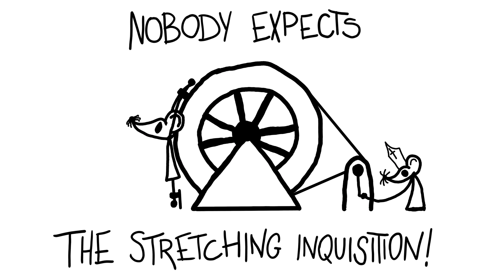
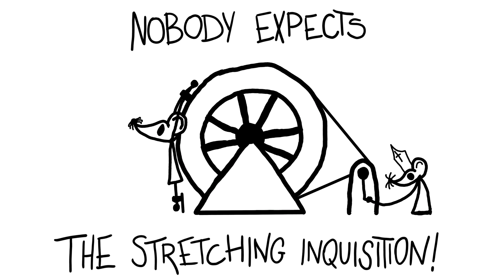

Sobre mi
Me llamo Santiago Fernández Andrés, y soy un diseñador de videojuegos, estudié el grado universitario de Diseño y desarrollo de videojuegos en ESNE, escogí la rama de diseño, pero aprendí por mi cuenta a programar en C# en Unity y a usar el motor, algo que más adelante extendí a GdScript y Godot.
Carrera laboral
Entre 2022 y 2023 estuve trabajando principalmente como programador en Dyp Sloom, aunque siendo un equipo pequeño, también participé como diseñador, y a veces como tecnical artist. Con ellos lanzamos el videojuego Potion Blast en steam.
Entre 2023 y 2024 me contrataron para trabajar en GGTech en Alicante como diseñador, que poco a poco se fue centrando en diseñador de niveles. Comencé con ellos haciendo niveles para eWorlds, y más tarde nos encargaron hacer mapas para varios eventos en Fortnite. Hice también alguna cosilla de tecnical artist, pero no tanto como en el equipo anterior.
Proyectos personales
La carrera
En la carrera tuvimos varias asignaturas en las que nos mandaban hacer juegos pequeños en equipo, y además cada curso teníamos que hacer un proyecto de videojuego (Cosa que honestamente agradezco, porque era como más aprendía, y además disfrutaba mucho con ello, aunque también nos demostró lo complicado que era gestionar equipos).
Creo que llegamos a hacer un total de 13 videojuegos y juegos de mesa directamente de asignaturas, no todos salieron a la luz, pero todos fueron útiles para aprender y experimentar.
Proyectos universitarios
La mayoría de los videojuegos que hicimos en la carrera los hice con un equipo que formamos en el segundo año llamado Ashes, al que le guardo mucho cariño, y en el que me dedicaría a ser diseñador y programador a la par. Comenzaríamos haciendo un juego llamado Straight Outta Birbton de lucha estilo Smash Bros Brawl (Probablemente no la mejor idea) pero salió un juego gracioso de peleas de aves gangster.
El videojuego del siguiente año fue Constella, un juego de navegar con una barca descubriendo las fases de la pérdida, y lo que más aprendí con su desarrollo fue que cambiar el vertex displacement de un modelo no modifica su colisión, que aunque suene lógico, en aquel entonces no me quedaba del todo claro, y nos hizo tardar un montón en poder tener un primer prototipo funcional, por culpa de las olitas, pero estoy contento con el resultado final.
En ese mismo año hicimos en asignaturas otros 2 proyectos, un juego de minijuegos de rotación con la rueda del ratón llamado Rotato, que quedó muy resultón. Y un juego de cartas inspirado en la ruleta rusa llamado You're Dead, que nos redescubrió lo difícil que es imprimir algo y que quede con los colores que quieres.
 

Y en cuarto año, tuvimos una asignatura que nos empujó a experimentar más, la cual le tengo mucho aprecio, con la que sacamos unos 4 juegos que se salen un poco del tiesto. No están publicados, pero quizás algún día les echo un vistazo por si se puede sacar alguno, o si necesita un pequeño empujón para ponerlo en público.


Hippocratic Oath
El último proyecto, el del TFG, siendo probablemente el que más llamaba la atención, pero que no pudimos llegar a sacar fue Hippocratic Oath, un juego novela visual y de cirugía en la época Victoriana.
Dado que en el equipo éramos varios diseñadores, nos dividimos los sistemas y la investigación histórica, por mis conocimientos de programación nos encargamos un compañero y yo del diseño de las cirugías, las cuales intentamos transmitir la crudeza de la situación junto a la falta de conocimiento, por ello escogimos hacer una interfaz y mecánicas mayoritariamente diegéticas, buscando una sensación de tensión y de incertidumbre, aunque dejando cierto feedback que dejase claro las situaciones críticas.
En el apartado técnico, a parte de programar los múltiples sistemas que se diseñaron, destacaba por la forma de interactuar entre distintas capas de un cuerpo 2D animado con huesos, mediante máscaras que se generaban y modificaban a tiempo real, unido a beziers que definían los bordes de la apertura, jerarquizado de tal manera que seguían las animaciones del modelo.
Por desgracia no lo llegamos a terminar porque se nos acababa el periodo de la universidad, y teníamos distintos objetivos y necesidades que eran incompatibles.


Jams
Las Jams son un concepto que me gusta mucho, pero que no termino de pillarles el tranquillo (En parte porque me suelo pasar de ambicioso, o por ser muy indeciso) pero suelo pasármelo bien, que en principio es el objetivo.
Coincidentalmente, de las jams que hemos hecho de cultura abierta, he salido satisfecho, el primero fue un typer llamado Aquelarre, y el segundo un juego estilo Papers please de censurar obras de arte, Lienzos de negro, aunque éste último llegamos un poco justos.


Y también hay varios juegos de jam que no hemos acabado, y suele ser por abarcar de más, aunque hubo una vez que directamente el juego se rompía, así, sin más, pero al menos hemos sacado siempre algo que aprender.
Proyectos por cuenta propia
Siempre me ha costado hacer proyectos solo o prácticamente por mi propia cuenta, creo que parte de lo que me empuja a experimentar y expresarme es poder hacerlo con otras personas con las que puedo estar cómodo, pero aún así, algo he conseguido sacar adelante.
Uno de los proyectos comienza con un usuario de Mastodon pidiendo que alguien hiciese una aplicación para gestionar tareas con cronómetro, y por algún motivo, a mi me dio ganas de hacerlo, y así nació Cronotareas, un proyecto con el que quise experimentar con las interfaces y la herramienta de temas de Godot.
Otro de los proyectos que hice por mi cuenta fue una tarjeta regalo para un amigo, este es algo más personal, por lo que no está publicado ni nada. En él usé algunas ilustraciones que hizo otro amigo, para hacer lo dicho, un equivalente digital a una tarjeta regalo, con diálogos e interacciones.
Y por último, esta web, aunque no es un juego, pero bueno, quería tener algo llamativo para mostrar mi portfolio, y repasar HTML y CSS.
Intereses
Recientemente me ha empezado a interesar el concepto de los proyectos
colaborativos sin ánimo de lucro, y bueno, siendo mi espacio predominante
el digital, he empezado a curiosear entorno al open source.
No solo eso me ha llevado a empezar a usar linux en mi día a día, también
he acabado dándole nuevas oportunidades a usar programas menos populares,
pero me da cierta alegría el utilizar este tipo de programas, y probablemente
lo que ha abierto esta veta ha sido cambiar Unity por Godot en el uso personal.
Acercándonos más al presente, he podido recuperar mi antigua impresora 3D,
una BQ Hephestos, que es un tipo de herramienta que desde siempre me ha
llamado la atención por su capacidad de democratizar el crear objetos de
forma precisa, y encima pudiendo ser sostenible.
La mía requiere de cierto mantenimiento por estar viejita, pero aún así creo
que es un hobbie que merece la pena.
Otro de mis hobbies es esquiar, hace un tiempo que no he podido ir/dedicado tiempo, por haber estado centrado en la universidad, en el trabajo, o a la preocupación que tuviese de turno, pero llevo desde los 10 años, y debería de pasarme un poco más cuando pueda.